u19_h2g_enrichment_analysis
Jing Gu
2024-06-07
Last updated: 2024-06-07
Checks: 7 0
Knit directory: lung_lymph_scMultiomics/
This reproducible R Markdown analysis was created with workflowr (version 1.7.1). The Checks tab describes the reproducibility checks that were applied when the results were created. The Past versions tab lists the development history.
Great! Since the R Markdown file has been committed to the Git repository, you know the exact version of the code that produced these results.
Great job! The global environment was empty. Objects defined in the global environment can affect the analysis in your R Markdown file in unknown ways. For reproduciblity it’s best to always run the code in an empty environment.
The command set.seed(20221229) was run prior to running
the code in the R Markdown file. Setting a seed ensures that any results
that rely on randomness, e.g. subsampling or permutations, are
reproducible.
Great job! Recording the operating system, R version, and package versions is critical for reproducibility.
Nice! There were no cached chunks for this analysis, so you can be confident that you successfully produced the results during this run.
Great job! Using relative paths to the files within your workflowr project makes it easier to run your code on other machines.
Great! You are using Git for version control. Tracking code development and connecting the code version to the results is critical for reproducibility.
The results in this page were generated with repository version ede0340. See the Past versions tab to see a history of the changes made to the R Markdown and HTML files.
Note that you need to be careful to ensure that all relevant files for
the analysis have been committed to Git prior to generating the results
(you can use wflow_publish or
wflow_git_commit). workflowr only checks the R Markdown
file, but you know if there are other scripts or data files that it
depends on. Below is the status of the Git repository when the results
were generated:
Ignored files:
Ignored: analysis/.RData
Ignored: analysis/.Rhistory
Untracked files:
Untracked: analysis/.ipynb_checkpoints/
Untracked: analysis/test_GO_enrichment.ipynb
Untracked: analysis/u19_atac_fastTopics.Rmd
Untracked: analysis/u19_regulon_enrichment.Rmd
Untracked: data/TF_target_sizes_GRN.txt
Untracked: data/U19_T_cell_peaks_metadata.RDS
Untracked: data/Wang_2020_T_cell_peaks_metadata.RDS
Untracked: data/lung_GRN_CD4_T_edges.txt
Untracked: data/lung_GRN_CD8_T_edges.txt
Untracked: data/lung_GRN_Th17_edges.txt
Untracked: data/lung_GRN_Treg_edges.txt
Untracked: output/annotation_reference.txt
Untracked: output/fastTopics
Untracked: output/homer/
Untracked: output/ldsc_enrichment
Untracked: output/lung_immune_atac_peaks_high_ePIPs.RDS
Untracked: output/positions.bed
Unstaged changes:
Modified: analysis/cross_tissue_DE_u19_fastTopics.Rmd
Modified: analysis/identify_regulatory_programs_u19_GRN.Rmd
Modified: analysis/rank_TFs_from_pairwise_comparison.ipynb
Deleted: code/run_fastTopic.R
Deleted: lung_immune_fine_mapping.Rproj
Note that any generated files, e.g. HTML, png, CSS, etc., are not included in this status report because it is ok for generated content to have uncommitted changes.
These are the previous versions of the repository in which changes were
made to the R Markdown (analysis/u19_h2g_enrichment.Rmd)
and HTML (docs/u19_h2g_enrichment.html) files. If you’ve
configured a remote Git repository (see ?wflow_git_remote),
click on the hyperlinks in the table below to view the files as they
were in that past version.
| File | Version | Author | Date | Message |
|---|---|---|---|---|
| Rmd | ede0340 | Jing Gu | 2024-06-07 | added tissue-group analysis |
| html | ca85982 | Jing Gu | 2024-06-05 | Build site. |
| Rmd | 32fec27 | Jing Gu | 2024-06-05 | update h2g analysis |
| html | 71a11fc | Jing Gu | 2024-06-05 | Build site. |
| Rmd | 8e7a5ac | Jing Gu | 2024-06-05 | h2g analysis |
Outlines
- Evaluate how much additional information we can get from our multi-omics dataset
- characterize and compare our identified open chromatin peaks with Wang et al.
- estimate heritability enrichment for annotations derived from our
chromatin data across many traits
- cell-type based annotations
- topic-based annotations
- Identify relevant cell-types and tissues for Asthma
- find peaks in our dataset that overlap with enhancers with high ePIPs based on GWAS and other single-cell ATAC-seq data and then get the corresponding cell-type and tissue information
- compute ePIP using our own data set and then identify relevant
cell-types or tissues
- Compute ePIPs by summing up PIPs of causal variants that overlap with each enhancer
Evaluate the heritability contribution of our multi-omics dataset
Characterize and compare peaks from T cells between two dataset
A barplot of summarizing peak counts by types show Wang et al. identified more peaks in distal and exonic regions but fewer ones in promoters compared to our dataset. The color indicates whether each query peak in U19 overlaps with the one in Wang et al. We see more than 50% peaks in U19 overlapped with ones in Wang et al., while these overlapped peaks take up less than 50% of peaks in Wang et al. 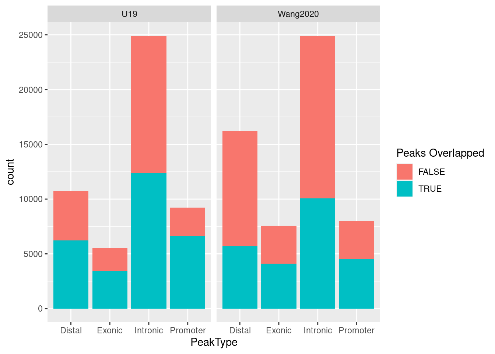
| Version | Author | Date |
|---|---|---|
| 71a11fc | Jing Gu | 2024-06-05 |
Identify relevant tissue or cell-type for immune diseases
METHOD: Test heritability enrichment through S-LDSC
The union set of peaks from U19 atac-seq data were first lifted over to hg19. The following table shows the change in genome builds only made 1% of peaks have inconsistent width.
nPeak_difference nPeak_hg19
lungs_Type_17_helper_T_cells 0 1208
lungs_Tem_Trm_cytotoxic_T_cells -58 10539
lungs_Tcm_Naive_helper_T_cells -35 13234
lungs_Regulatory_T_cells -44 12322
lungs_Naive_B_cells -85 18411
spleens_Regulatory_T_cells -16 8348
percentPeak_unequal_width
lungs_Type_17_helper_T_cells 0.017
lungs_Tem_Trm_cytotoxic_T_cells 0.011
lungs_Tcm_Naive_helper_T_cells 0.013
lungs_Regulatory_T_cells 0.010
lungs_Naive_B_cells 0.012
spleens_Regulatory_T_cells 0.014Test enrichment for individual cell-type of each tissue
- GWAS: a broad range of triats
- Baseline annotation: 53 annotations from Finucane et al. 2015 Nat Genet (Baseline v1.2)
Overall, we observed immune cells in both tissues are significantly enriched for genetic risks of immune diseases but not those of other traits. T cells from both tissues show significant enrichment for risk variants of immune diseases, while only lung B cells show enrichment.
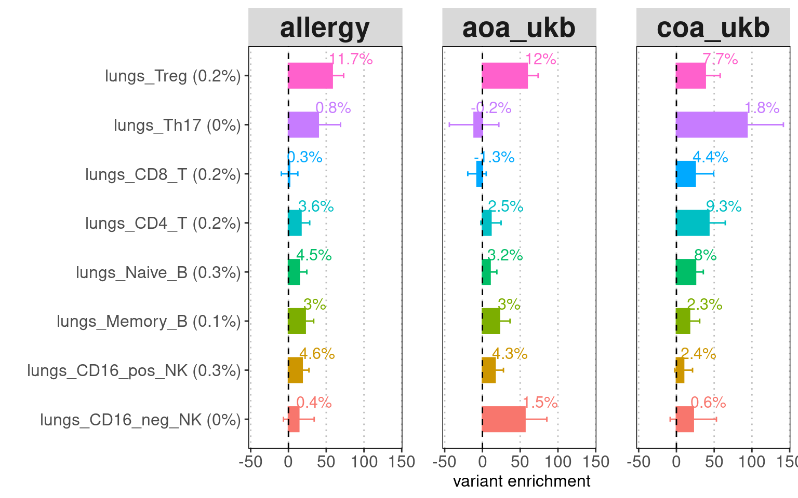
| Version | Author | Date |
|---|---|---|
| 71a11fc | Jing Gu | 2024-06-05 |
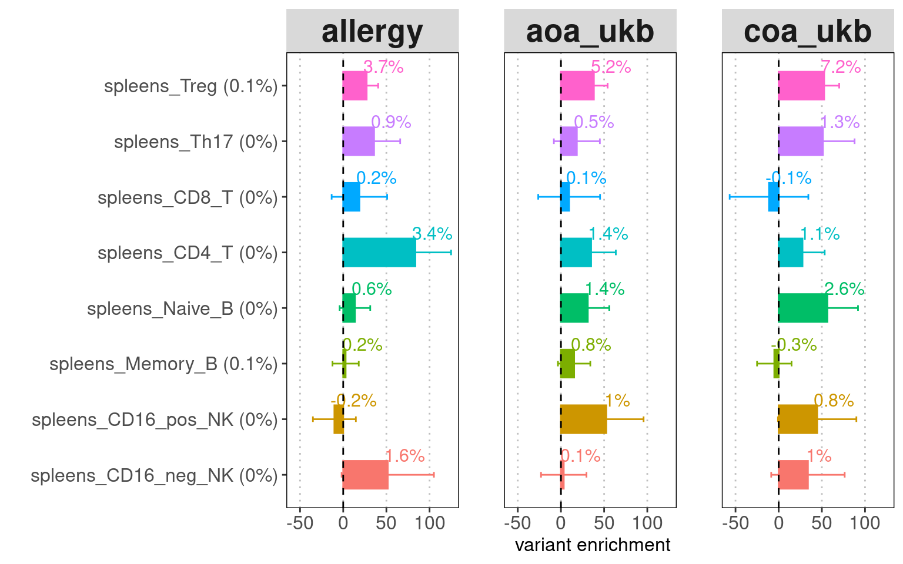
| Version | Author | Date |
|---|---|---|
| 71a11fc | Jing Gu | 2024-06-05 |
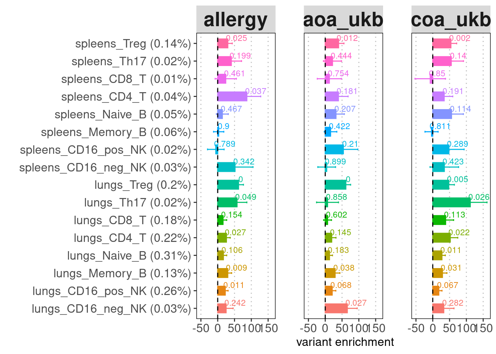
The high standard errors for enrichment estimates are probably due to low proportion of SNPs present in peaks called by each cluster. To make the point that lung tissue is more important than spleen to disease, we can temporarily ignore sub-types but use major immune cell types like T, B and NK cells to improve confidence interval.
Test individual enrichment for major cell types of each tissue
A barplot for LDSC enrichment results. Baseline
annotation: baseline v1.2 (53 annotations) recommended for comparing the
enrichment p-values across cell types or tissues. Y-axis:
annotation(%GWAS SNPs within annotation). X-axis: enrichment fold.
Label: enrichment p-value.
Merging cell types to contain more risk variants does help lower the standard errors. For both tissues, T cells show the strongest enrichment and contain the highest proportion of risk variants. Across cell types, lung immune cells show more significant enrichment compare to spleen immune cells.
 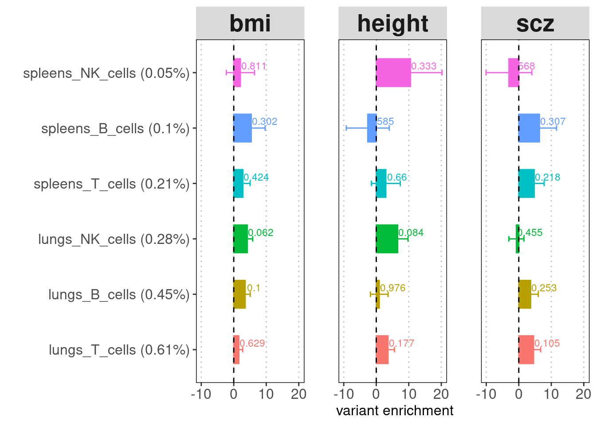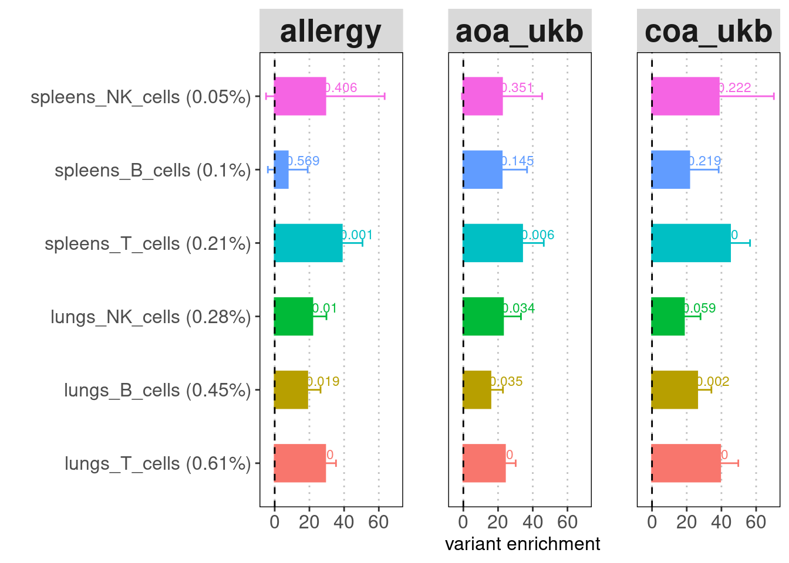
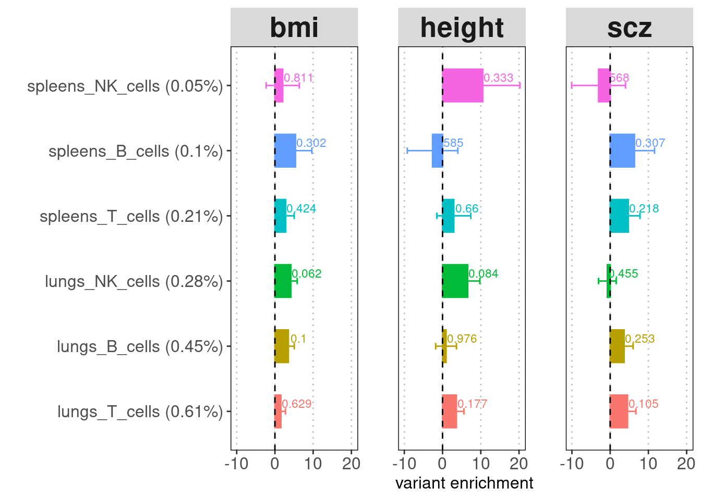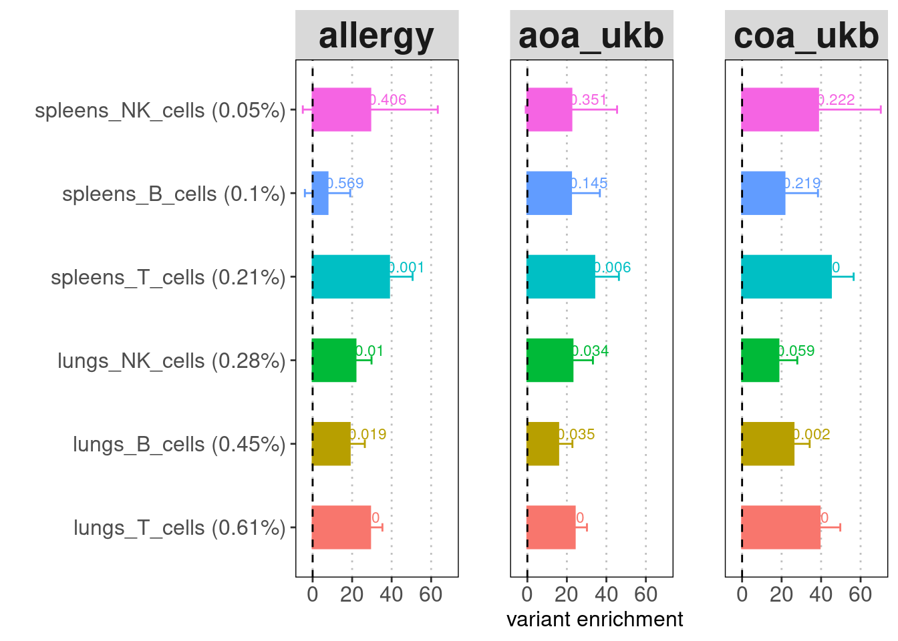
A dotplot for LDSC enrichment results
dot size: enrichment fold color: enrichment p-value 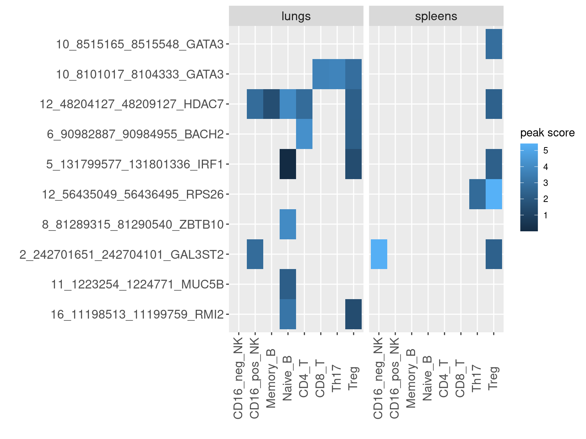
Tissue-specific analyses for each major cell type.
LDSC operates cell-type specific analyses by taking two sets of LD scores for each test. Here I input one set of LD scores derived from lung and the other set from spleen as control for each major cell type. The resulting p-value tests whether the coefficient is greater than zero, which implies if lung tissue is more significant. To compute tissue-specific effects, I can obtain peaks specific to lung tissue and then repeat this analysis.
A barplot for tissue-group analysis X-axis: -log10
p-values for testing the coefficient

| Version | Author | Date |
|---|---|---|
| ca85982 | Jing Gu | 2024-06-05 |
Jointly test multiple annotations
A barplot for LDSC enrichment results
Baseline annotation: BaselineLD_v2.2 (97 annotations) recommended for
estimating heritability. Y-axis: annotation(%GWAS SNPs within
annotation). X-axis: enrichment fold.
Label: heritability
The chromatin accessible peaks from T cells, B cells, and NK cells were jointly tested for each tissue. The results show that lung immune cells explain more disease heritability than spleen immmune cells. Conditional on other lung immune cells, Treg OCRs have the most contribution in Allergy and AOA, followed by B cells and NK cells. For COA, the disease heritability was explained evenly by Treg, CD4+ T and naive B cells. The CD8+ T cells only contributes to COA heritability. 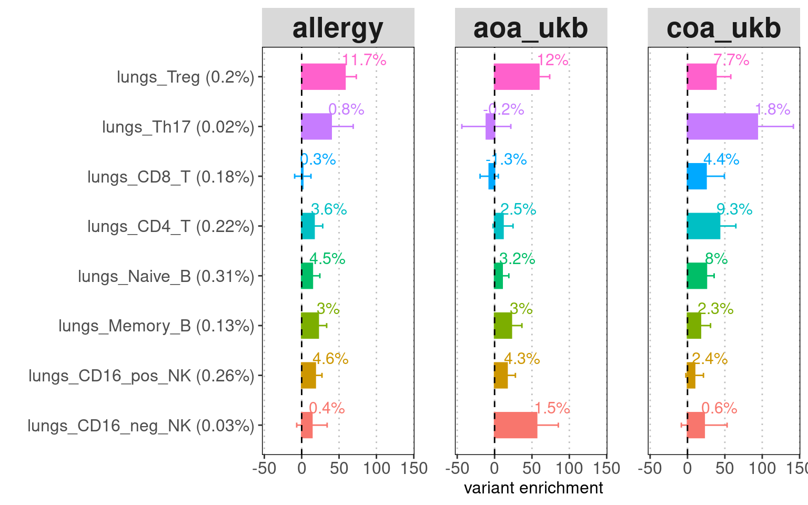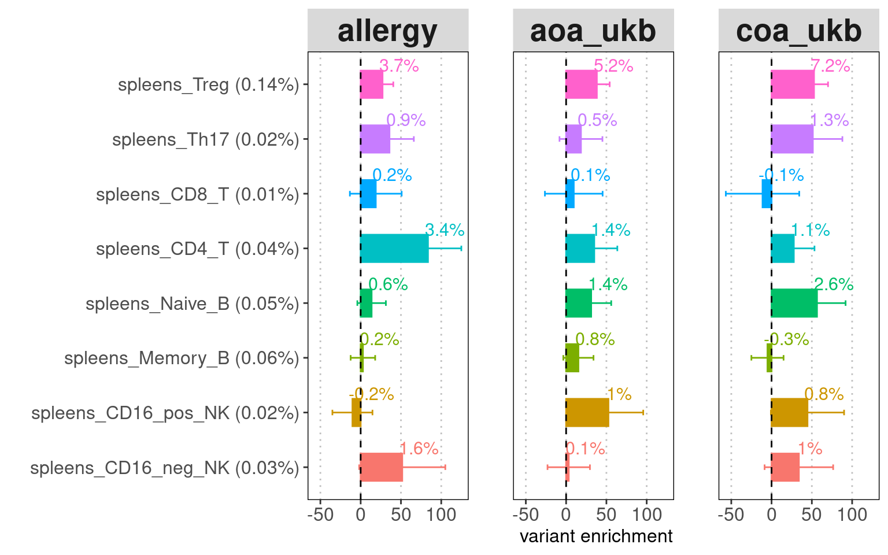
Identify relevant cell-types and tissues for Asthma
Based on the list of enhancers ranked by the causal signals from GWAS and other functional data, I looked for peaks in our dataset that overlapped with high-confident enhancers. For enhancers overlapped by multiple peaks, the peak scores were computed by the average of their significant scores from peak calling.
Heatmap for peak scores
- X-axis denotes enhancer-gene pair, ranked by either AOA ePIP or COA ePIP.
- Color of heatmap is the log2 value of mean significant scores for peaks that overlap with enhancer of high PIPs.
AOA enhancers ranked by ePIPs

COA enhancers ranked by ePIPs

R version 4.2.0 (2022-04-22)
Platform: x86_64-pc-linux-gnu (64-bit)
Running under: CentOS Linux 7 (Core)
Matrix products: default
BLAS/LAPACK: /software/openblas-0.3.13-el7-x86_64/lib/libopenblas_haswellp-r0.3.13.so
locale:
[1] LC_CTYPE=en_US.UTF-8 LC_NUMERIC=C LC_TIME=C
[4] LC_COLLATE=C LC_MONETARY=C LC_MESSAGES=C
[7] LC_PAPER=C LC_NAME=C LC_ADDRESS=C
[10] LC_TELEPHONE=C LC_MEASUREMENT=C LC_IDENTIFICATION=C
attached base packages:
[1] grid stats4 stats graphics grDevices utils datasets
[8] methods base
other attached packages:
[1] rhdf5_2.42.1 SummarizedExperiment_1.28.0
[3] Biobase_2.58.0 MatrixGenerics_1.10.0
[5] Rcpp_1.0.12 Matrix_1.6-5
[7] matrixStats_1.2.0 stringr_1.5.1
[9] plyr_1.8.9 magrittr_2.0.3
[11] gtable_0.3.5 gtools_3.9.5
[13] gridExtra_2.3 ArchR_1.0.2
[15] rtracklayer_1.58.0 data.table_1.15.4
[17] GenomicRanges_1.50.2 GenomeInfoDb_1.34.9
[19] IRanges_2.32.0 S4Vectors_0.36.2
[21] BiocGenerics_0.44.0 dplyr_1.1.4
[23] ggplot2_3.4.0 workflowr_1.7.1
loaded via a namespace (and not attached):
[1] bitops_1.0-7 fs_1.6.4 httr_1.4.7
[4] rprojroot_2.0.4 tools_4.2.0 bslib_0.7.0
[7] utf8_1.2.4 R6_2.5.1 DT_0.33
[10] colorspace_2.1-0 rhdf5filters_1.10.1 withr_3.0.0
[13] tidyselect_1.2.1 processx_3.8.3 compiler_4.2.0
[16] git2r_0.33.0 cli_3.6.2 DelayedArray_0.24.0
[19] labeling_0.4.3 sass_0.4.9 scales_1.3.0
[22] callr_3.7.3 digest_0.6.35 Rsamtools_2.14.0
[25] rmarkdown_2.26 XVector_0.38.0 pkgconfig_2.0.3
[28] htmltools_0.5.8.1 fastmap_1.1.1 highr_0.10
[31] htmlwidgets_1.6.4 rlang_1.1.3 rstudioapi_0.15.0
[34] jquerylib_0.1.4 BiocIO_1.8.0 generics_0.1.3
[37] farver_2.1.1 jsonlite_1.8.8 crosstalk_1.2.1
[40] BiocParallel_1.32.6 RCurl_1.98-1.14 GenomeInfoDbData_1.2.9
[43] munsell_0.5.1 Rhdf5lib_1.20.0 fansi_1.0.6
[46] viridis_0.6.5 lifecycle_1.0.4 stringi_1.7.6
[49] whisker_0.4.1 yaml_2.3.8 zlibbioc_1.44.0
[52] parallel_4.2.0 promises_1.3.0 crayon_1.5.2
[55] lattice_0.22-5 Biostrings_2.66.0 cowplot_1.1.3
[58] knitr_1.46 ps_1.7.6 pillar_1.9.0
[61] rjson_0.2.21 codetools_0.2-19 XML_3.99-0.16.1
[64] glue_1.7.0 evaluate_0.23 getPass_0.2-2
[67] vctrs_0.6.5 httpuv_1.6.14 cachem_1.0.8
[70] xfun_0.43 restfulr_0.0.15 later_1.3.2
[73] viridisLite_0.4.2 tibble_3.2.1 GenomicAlignments_1.34.1